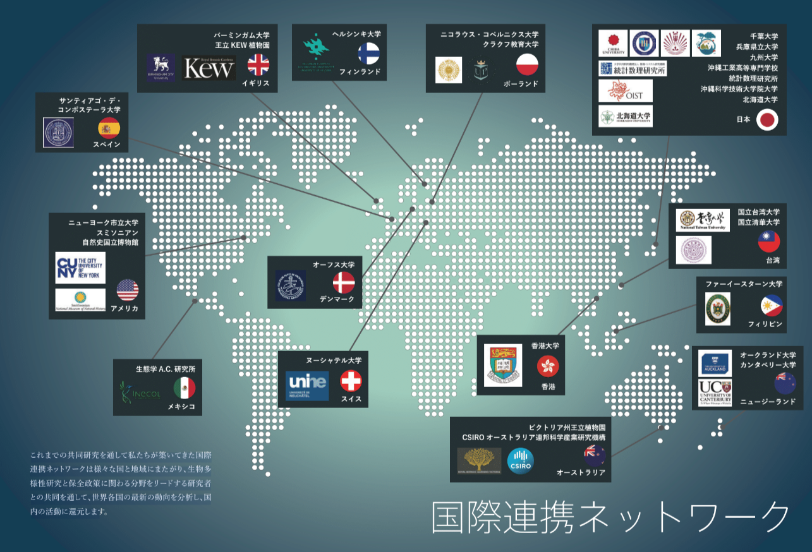

メンバー
ネイチャーポジティブにグローバルで取り組む：国際連携ネットワーク
生物多様性に対する意識の高まりを背景に、世界各国では様々な研究や事業開発が行われています。 これまでの共同研究を通して私たちが築いてきた国際連携ネットワークは様々な国と地域にまたがります。 世界を分野をリードする研究者との共同を通して、世界各国の最新の動向を分析し、国内の活動に還元します
シンクネイチャーは、生物多様性ビッグデータを用いた様々なコラボレーションを募集しています。アイデアをお持ちの方は、お問い合わせフォームからご連絡ください。